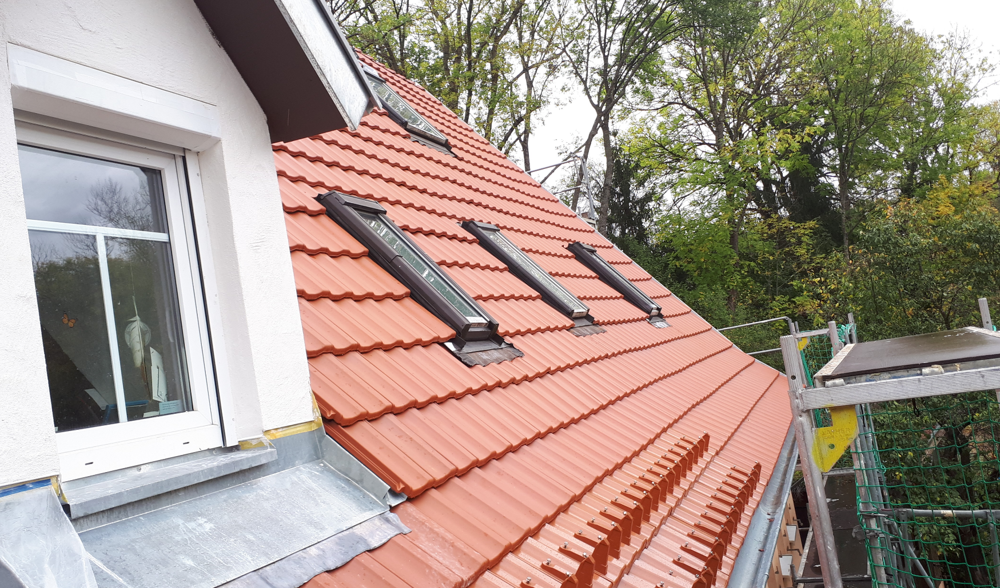
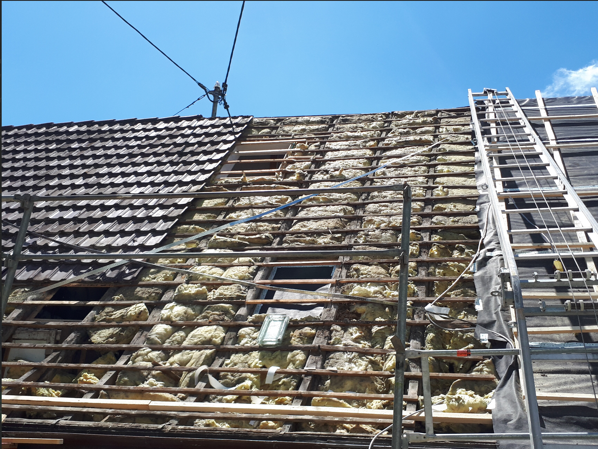
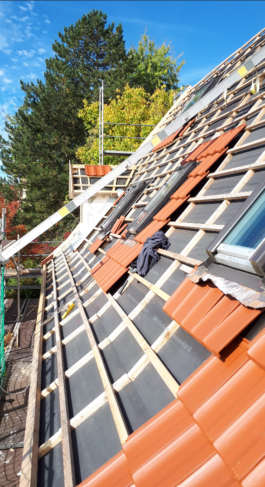

Historische Mühle: Dachsanierung mit Bestandssensibilität
Bei einer mindestens 600 Jahre alten historischen Mühle zählt nicht nur die reine Ausführung, sondern der respektvolle Umgang mit vorhandener Substanz.
HolzHandwerk Möck setzte die Dachsanierung im Bestand um und verband die energetische Sanierung mit der Vorbereitung beziehungsweise Einbindung einer PV-Anlage.
Gerade bei einem Gebäude mit dieser Geschichte kommt es auf saubere Abstimmung, präzise Übergänge und ein Ergebnis an, das technisch funktioniert, ohne den Charakter des Objekts zu verlieren.
ProjektartDachsanierung im Bestand
Besonderheithistorische Mühle
Zusatzenergetisch saniert mit PV

